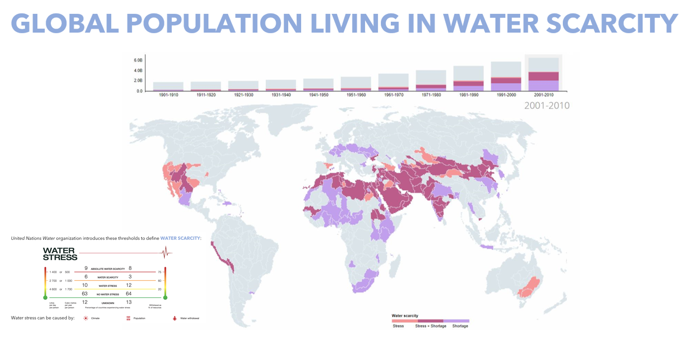
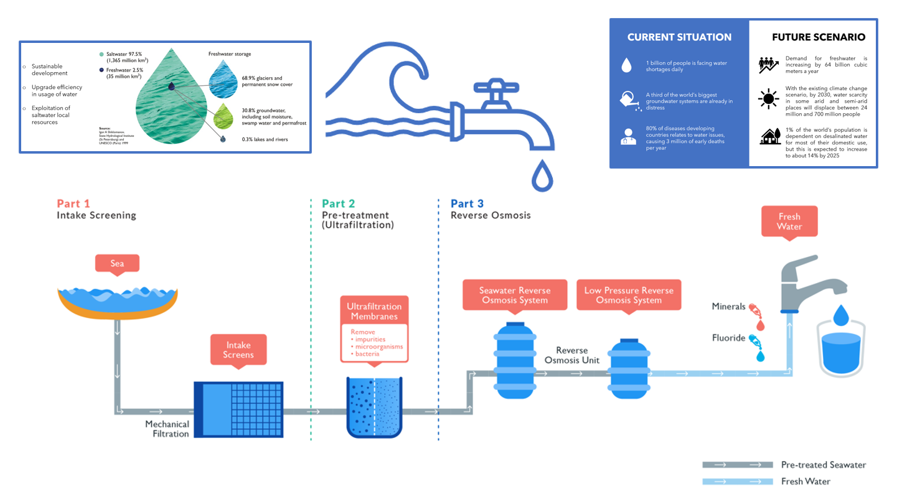
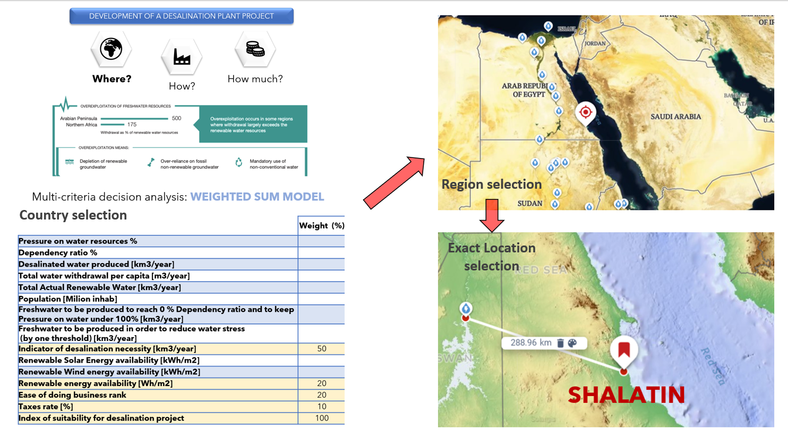
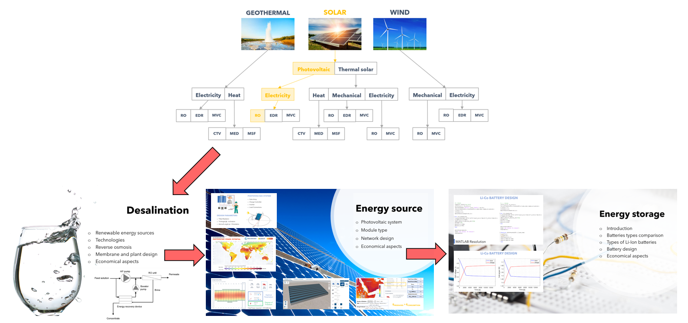
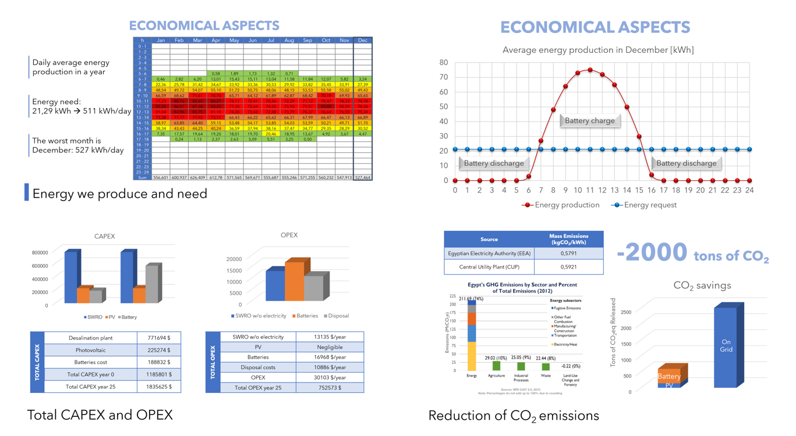

<div id="portfolio-page" class="portfolio-page-content">
    <div class="container">
        <div class="portfolio-nav">
            <div id="portfolio-close-button" class="portfolio-close-button">
                <a href="#portfolio"><i class="fa fa-close"></i></a>
            </div>
        </div>

        <div class="portfolio-title">
            <h1>Portfolio Project</h1>
        </div>

        <div class="row">
            <div class="col-sm-6 col-md-6 portfolio-block">
                <div class="owl-carousel portfolio-page-carousel">
                    <div class="item">
                        
                    </div>
                    <div class="item">
                        
                    </div>
                    <div class="item">
                        
                    </div>
                    <div class="item">
                        
                    </div>
                    <div class="item">
                        
                    </div>
                </div>

                <!-- <div class="portfolio-page-video embed-responsive embed-responsive-16by9">
                  <iframe class="embed-responsive-item" src="https://player.vimeo.com/video/97102654?autoplay=0"></iframe>
                </div> -->

                <!--
                <div class="portfolio-page-image">
                    
                </div>
                -->

                <script type="text/javascript">
                    jQuery(document).ready(function($){
                        $('.portfolio-page-carousel').owlCarousel({
                            smartSpeed:1200,
                            items: 1,
                            loop: true,
                            dots: true,
                            nav: true,
                            navText: false,
                            margin: 10
                        });
                    }); 
                </script>
            </div>

            <div class="col-sm-6 col-md-6 portfolio-block">
                <!-- Project Description -->
                <div class="block-title">
                    <h3>Design of Energy Supply Management for a Desalination Plant in Rural Area</h3>
                </div>
                <ul class="project-general-info">
                    <li><p><i class="fa fa-user"></i>Design of Energy Supply Management for a Desalination Plant in Rural Area</p></li>
                    <!-- <li><p><i class="fa fa-globe"></i> <a href="#" target="_blank">www.project-site.com</a></p></li> -->
                    <li><p><i class="fa fa-calendar"></i> Mar 2020 - May 2020</p></li>
                </ul>

                <p class="text-justify">In this project work, one of the critical issues in the Developing World is addressed, which is “Water Scarcity”. Initially, comprehended the current situation and then predicted the future scenario of the water requirements. By considering this evaluation into account, evaluated the possible long term sustainable solutions for the current and future scenario problems. The best possible solution to overcome the problem of water distress is the utilisation of the “Desalination Plant”.
                    By considering these aspects into account, developed the “Desalination Plant” by considering a set of countries that are under severe freshwater distress. Initially, by developing a “Multi-criteria Weighted Sum Model”, selected the Country, Region and Location. After the Location selection of the plant, quantitatively designed the Desalination plant. Elaborating the objective, by considering the Location characteristics, selected the “Desalination technology”. Subsequently, selected the type of Renewable energy resources to power the Plant. Finally, the Energy storage has been selected & scaled. These tasks had been carried out in detail quantitatively. Finally, the economical aspects of the plant have been detailed by considering the Capital & Operational expenditures. In this way, demonstrated the overcoming problem of Water scarcity in a selected crucially developing country, not only in terms of performance but also in terms of basic pillars of sustainability, i.e. Economical & Environment.
            </p>
                <!-- /Project Description -->

                <!-- Technology -->
                <div class="tags-block">
                    <div class="block-title">
                        <h3>Keywords</h3>
                    </div>
                    <ul class="tags">
                        <li><a>Desalination plant</a></li>
                        <li><a>Water Scarcity</a></li>
                        <li><a>Sustainable Solutions</a></li>
                        <li><a>Multi-criteria Weighted Sum Model</a></li>
                        <li><a>Reverse Osmosis Tecnnology</a></li>
                        <li><a>Renewable Energy Resources</a></li>
                        <li><a>Solar Energy</a></li>
                        <li><a>Economical Analysis</a></li>
                        <li><a>Energy Management</a></li>
                    </ul>
                </div>
                <!-- /Technology -->

                <!-- Share Buttons -->
                <!-- <div class="btn-group share-buttons">
                    <div class="block-title">
                        <h3>Share</h3>
                    </div>
                    <a href="#" target="_blank" class="btn"><i class="fa fa-facebook"></i> </a>
                    <a href="#" target="_blank" class="btn"><i class="fa fa-twitter"></i> </a>
                    <a href="#" target="_blank" class="btn"><i class="fa fa-dribbble"></i> </a>
                </div> -->
                <!-- /Share Buttons -->
            </div>
        </div>
    </div>
</div>
